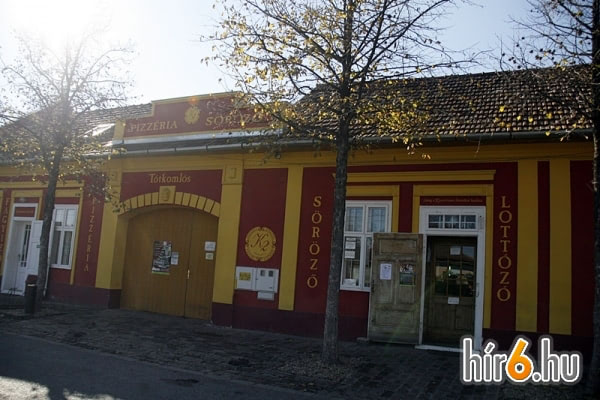

Eredeti olasz recept alapján készült, lassú, hideg kelesztésű kovászos tésztából — Tótkomlóson, a Szabadság tér 2. szám alatt.
A K2 Pizzéria pizzái eredeti olasz recept alapján, lassú, hideg kelesztésű, kovászos tésztából, kézzel nyújtva, kövön sülnek. A tészta mellett hamburgereket, tortillákat és hot-dogot is kínálunk — mindent friss alapanyagokból készítünk, helyben.
Ajándékozásra K2 Pizzéria ajándékutalványt is kínálunk, 2 000, 3 000, 5 000 és 10 000 forintos értékben.

| Hétfő – Csütörtök | 16:00 – 21:00 |
| Péntek – Szombat | 16:00 – 22:00 |
| Vasárnap | 16:30 – 21:00 |
A nyitvatartás változtatásának jogát fenntartjuk.
Koppintson egy kategóriára a megnyitáshoz. Az árak forintban értendők, és nem tartalmazzák a csomagolás díját.
Normál pizza kb. 28 cm, nagy pizza kb. 32 cm átmérőjű. Az „ÚJ" jelölésű és a csak 32
cm-es méretben kapható tételeket külön jelöltük. Calzone formában is kérhető.
Az áraink a csomagolás díját nem tartalmazzák: 200 Ft / pizzadoboz.
A kiszállítás díja: 400 Ft / cím
| Pizza | 28 cm | 32 cm |
|---|---|---|
| 1. Rózsaszósz, paradicsom, sajt | 2 650 Ft | 2 900 Ft |
| 2. Ligetszósz, gomba, sajt | 2 650 Ft | 2 900 Ft |
| 3. Horgász csaliszósz, kukorica, sajt | 2 650 Ft | 2 900 Ft |
| 4. GreenPeaceszósz, brokkoli, sajt | 2 650 Ft | 2 900 Ft |
| 5. Tavasziszósz, tavaszi zöldségek, sajt | 2 650 Ft | 2 900 Ft |
| 6. Hentesszósz, sonka, sajt | 2 650 Ft | 2 900 Ft |
| 7. Fitnessszósz, mozzarella | 2 650 Ft | 2 900 Ft |
| 8. Kiskomlósszósz, bacon, sajt | 2 850 Ft | 3 100 Ft |
| 9. Erdészszósz, sonka, gomba, sajt | 2 850 Ft | 3 100 Ft |
| 10. Kanyarszósz, pepperoni paprika, fokhagyma, sajt | 2 650 Ft | 2 900 Ft |
| 11. Füstösszósz, füstölt tarja, füstölt sajt | 2 850 Ft | 3 100 Ft |
| 12. Viharsarokszósz, pepperoni paprika, bacon, sajt | 2 850 Ft | 3 100 Ft |
| 13. Öreg Tanyásszósz, zöldpaprika, sonka, mozzarella | 2 850 Ft | 3 100 Ft |
| 14. Jadvigaszósz, sonka, kukorica, sajt | 2 850 Ft | 3 100 Ft |
| 15. Teraszszósz, pepperoni paprika, füstölt tarja, sajt | 2 850 Ft | 3 100 Ft |
| 16. Hawaiiszósz, sonka, ananász, sajt | 2 850 Ft | 3 100 Ft |
| 17. Vega Mixszósz, paprika, gomba, kukorica, sajt | 2 850 Ft | 3 100 Ft |
| 18. Négysajtosszósz, trapista sajt, mozzarella, füstölt sajt, edami sajt | 2 950 Ft | 3 200 Ft |
| 19. Lagunaszósz, ananász, kukorica, sajt | 2 950 Ft | 3 200 Ft |
| 20. Bánátszósz, kolbász, gomba, oliva, friss paradicsom, sajt | 2 950 Ft | 3 200 Ft |
| 21. Borszigetszósz, sonka, gomba, kukorica, sajt | 2 950 Ft | 3 200 Ft |
| 22. Sticky kedvencetejfölös alap, virsli karikák, sajt | 2 950 Ft | 3 200 Ft |
| 23. Piedoneszósz, fokhagyma, bab, bacon, sajt | 2 950 Ft | 3 200 Ft |
| 24. Komlósi Toronyszósz, sonka, kolbász, erős paprika, hagyma, sajt | 3 050 Ft | 3 300 Ft |
| 25. Négy Évszakszósz, sonka, gomba, kolbász, kukorica, sajt | 3 050 Ft | 3 300 Ft |
| 26. Kopáncsi Juhásztejfölös alap, túró, erős paprika, bacon, mozzarella | 3 050 Ft | 3 300 Ft |
| 27. Szegedi Zsiványszósz, pick szalámi, hagyma, kukorica, sajt | 3 050 Ft | 3 300 Ft |
| 28. YetiÚJszósz, virsli, hamburgerhús, dönnerhús (marha), gyroshús (csirke), pepperoni paprika, lilahagyma, sajt — csak 32 cm-es méretben | — | 4 300 Ft |
| 29. VegaMaxszósz, brokkoli, gomba, kukorica, borsó, sajt | 3 050 Ft | 3 300 Ft |
| 30. Germántejfölös alap, sonka, kukorica, kolbász, sajt | 3 050 Ft | 3 300 Ft |
| 31. Mexikóiszósz, kukorica, kolbász, bab, erős paprika, hagyma, sajt | 3 050 Ft | 3 300 Ft |
| 32. Kalifa Kedvenceszósz, hambi hús, gomba, paprika, sajt | 3 050 Ft | 3 300 Ft |
| 33. Cápaledelszósz, tenger gyümölcsei, sajt, kagyló, fokhagymás olívaolaj | 3 300 Ft | 3 550 Ft |
| 34. Popeyeparadicsomos szósz, spenót, mozzarella, fokhagymás olívaolaj | 2 650 Ft | 2 900 Ft |
| 35. Effendiszósz, paprika, hagyma, füstölt tarja, füstölt sajt | 3 300 Ft | 3 550 Ft |
| 36. Éhes Tótszósz, sonka, kolbász, bacon, füstölt tarja, hagyma, sajt | 3 300 Ft | 3 550 Ft |
| 37. K2paradicsomos szósz, sonka, kukorica, sajt, tejfölös szósz, kolbász, paprika, mozzarella | 3 300 Ft | 3 550 Ft |
| 38. Szalamooparadicsomos szósz, szalámi, mozzarella | 2 950 Ft | 3 200 Ft |
| 39. Sárkány leheleteparadicsomos szósz, szalámi, pepperoni paprika, paprika, chili olaj, mozzarella | 3 050 Ft | 3 300 Ft |
| 40. Gyrosszósz, gyroshús, lilahagyma, sajt, fokhagymás öntet — csak 32 cm-es méretben | — | 3 550 Ft |
| 41. Dönner pizzaparadicsomos szósz, kebabhús (marha), lilahagyma, fokhagymás öntet — csak 32 cm-es méretben | — | 3 750 Ft |
| 42. Németh Laci kedvence ❤❤tejfölös alap, sonka, kolbász, dupla sajt — csak 32 cm-es méretben | — | 4 200 Ft |
| Feltét | 28 cm | 32 cm |
|---|---|---|
| Füstölt sajt | 750 Ft | 800 Ft |
| Sajtok | 650 Ft | 700 Ft |
| Húsok, felvágottak | 400 Ft | 450 Ft |
| Zöldségek | 300 Ft | 350 Ft |
| Tenger gyümölcsei | 630 Ft | 700 Ft |
| Kagyló | 650 Ft | 650 Ft |
Házi buci, szósz, prémium marhahús, zöldfélék.
Házi buci, házi szósz, marhahús, zöldfélék.
Extra feltétek (szósz, sajt, zöldség, pirított hagyma, bacon): 150 Ft / feltét.